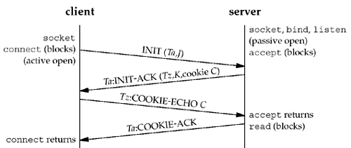
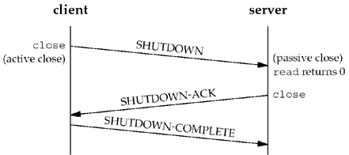
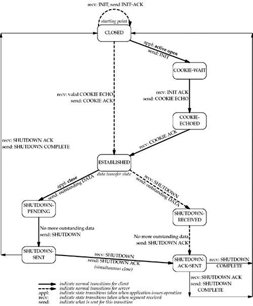
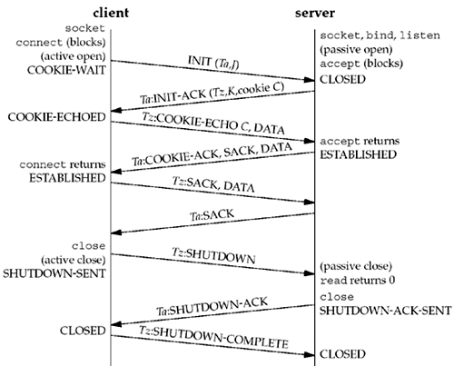

| [ Team LiB ] |
|
2.8 SCTP Association Establishment and TerminationSCTP is connection-oriented like TCP, so it also has association establishment and termination handshakes. However, SCTP's handshakes are different than TCP's, so we describe them here. Four-Way HandshakeThe following scenario, similar to TCP, occurs when an SCTP association is established:
The minimum number of packets required for this exchange is four; hence, this process is called SCTP's four-way handshake. We show a picture of the four segments in Figure 2.6. Figure 2.6. SCTP four-way handshake. The SCTP four-way handshake is similar in many ways to TCP's three-way handshake, except for the cookie generation, which is an integral part. The INIT carries with it (along with its many parameters) a verification tag, Ta, and an initial sequence number, J. The tag Ta must be present in every packet sent by the peer for the life of the association. The initial sequence number J is used as the starting sequence number for DATA messages termed DATA chunks. The peer also chooses a verification tag, Tz, which must be present in each of its packets for the life of the association. Along with the verification tag and initial sequence number, K, the receiver of the INIT also sends a cookie, C. The cookie contains all the state needed to set up the SCTP association, so that the server's SCTP stack does not need to keep information about the associating client. Further details on SCTP's association setup can be found in Chapter 4 of [Stewart and Xie 2001]. At the conclusion of the four-way handshake, each side chooses a primary destination address. The primary destination address is used as the default destination to which data will be sent in the absence of network failure. The four-way handshake is used in SCTP to avoid a form of denial-of-service attack we will discuss in Section 4.5.
Association TerminationUnlike TCP, SCTP does not permit a "half-closed" association. When one end shuts down an association, the other end must stop sending new data. The receiver of the shutdown request sends the data that was queued, if any, and then completes the shutdown. We show this exchange in Figure 2.7. Figure 2.7. Packets exchanged when an SCTP association is closed. SCTP does not have a TIME_WAIT state like TCP, due to its use of verification tags. All chunks are tagged with the tag exchanged in the INIT chunks; a chunk from an old connection will arrive with an incorrect tag. Therefore, in lieu of keeping an entire connection in TIME_WAIT, SCTP instead places verification tag values in TIME_WAIT. SCTP State Transition DiagramThe operation of SCTP with regard to association establishment and termination can be specified with a state transition diagram. We show this in Figure 2.8. Figure 2.8. SCTP state transition diagram. As in Figure 2.4, the transitions from one state to another in the state machine are dictated by the rules of SCTP, based on the current state and the chunk received in that state. For example, if an application performs an active open in the CLOSED state, SCTP sends an INIT and the new state is COOKIE-WAIT. If SCTP next receives an INIT ACK, it sends a COOKIE ECHO and the new state is COOKIE-ECHOED. If SCTP then receives a COOKIE ACK, it moves to the ESTABLISHED state. This final state is where most data transfer occurs, although DATA chunks can be piggybacked on COOKIE ECHO and COOKIE ACK chunks. The two arrows leading from the ESTABLISHED state deal with the termination of an association. If an application calls close before receiving a SHUTDOWN (an active close), the transition is to the SHUTDOWN-PENDING state. However, if an application receives a SHUTDOWN while in the ESTABLISHED state (a passive close), the transition is to the SHUTDOWN-RECEIVED state. Watching the PacketsFigure 2.9 shows the actual packet exchange that takes place for a sample SCTP association: the association establishment, data transfer, and association termination. We also show the SCTP states through which each endpoint passes. Figure 2.9. Packet exchange for SCTP association. In this example, the client piggybacks its first data chunk on the COOKIE ECHO, and the server replies with data on the COOKIE ACK. In general, the COOKIE ECHO will often have one or more DATA chunks bundled with it when the application is using the one-to-many interface style (we will discuss the one-to-one and one-to-many interface styles in Section 9.2). The unit of information within an SCTP packet is a "chunk." A "chunk" is self-descriptive and contains a chunk type, chunk flags, and a chunk length. This approach facilitates the bundling of chunks simply by combining multiple chunks into an SCTP outbound packet (details on chunk bundling and normal data transmission procedures can be found in Chapter 5 of [Stewart and Xie 2001]). SCTP OptionsSCTP uses parameters and chunks to facilitate optional features. New features are defined by adding either of these two items, and allowing normal SCTP processing rules to report unknown parameters and unknown chunks. The upper two bits of both the parameter space and the chunk space dictate what an SCTP receiver should do with an unknown parameter or chunk (further details can be found in Section 3.1 of [Stewart and Xie 2001]). Currently, two extensions for SCTP are under development:
|
| [ Team LiB ] |
|